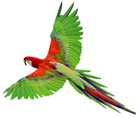
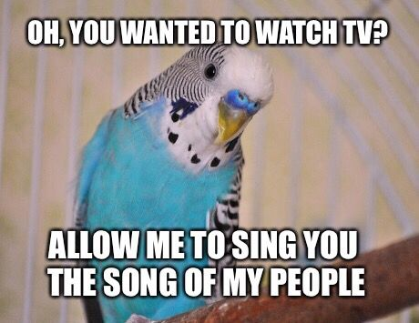
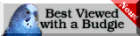

Benvenuti nella Parrot Page. Qui è dove incomicia il divertimento. Navigando tra pagine e pagine qui su BirdsWeb, potrai vedere tante curiosità e meme sui vostri animaletti piumati!
Cicicicicicici!= Sono arrabiato/frustrato
Chirp!= Sono felice!/vivace!
Canticchio= Comunico ma sono annoiato
Imitare voci= Voglio giocare!
Piume arruffate= Ho freddo!/Sono rilassato/Sto dormendo
Questa immagine e stata fatta su Wiggly Paint. Se per caso volete provarlo, potete semplicemente andare su itch.io.
